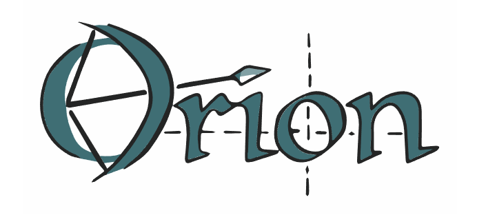

Orion-Asynchronous Distributed Hyperparameter Optimization
By Xavier Bouthillier, Nadhir Hassen, Christos Tsirigotis, François Corneau-Tremblay, Thomas Schweizer, Pierre Delaunay, Mirko Bronzi, Lin Dong , Christopher Beckham et.al in Research Journal of Machine Learning
December 10, 2020
Abstract
We present Orion, a black-box optimization tool that is designed to adapt to the workflow of machine learning researchers with minimal obstruction. We propose a new version control system for experiments, which can significantly improve the organization of research projects in machine learning as well as the efficiency of hyperparameter optimization. The entire tool is built with the goals of promoting reproducibility, fair benchmarking of different machine learning models, and providing a platform for the research of black-box optimization algorithms.
Collaboration
A collaboration between Mila and IBM for the development of Oríon
Session
Improved Deep Learning Workflows Through Hyperparameter Optimization with Oríon

- Posted on:
- December 10, 2020
- Length:
- 1 minute read, 103 words
- Categories:
- Research Journal of Machine Learning